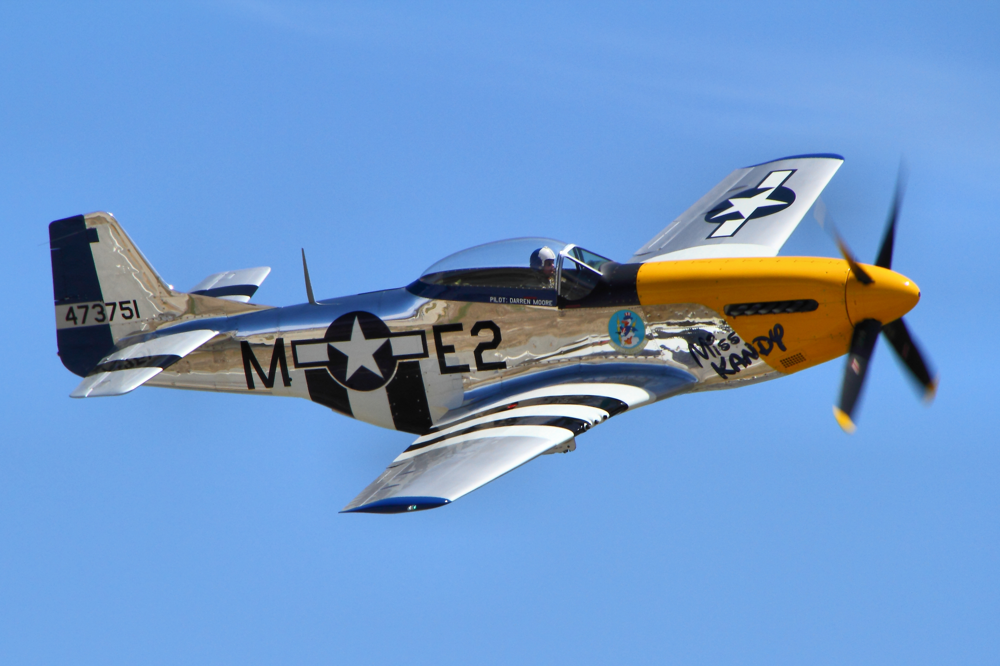

About the P-51 Mustang
The North American P-51 Mustang was a long-range, single-seat fighter and fighter-bomber used extensively during World War II. It gained fame for its role in escorting Allied bombers deep into enemy territory, significantly reducing bomber losses. With its excellent speed, maneuverability, and range, the Mustang proved highly effective in both air-to-air combat and ground attack missions. Its introduction helped achieve air superiority over Europe, contributing significantly to the Allied victory.